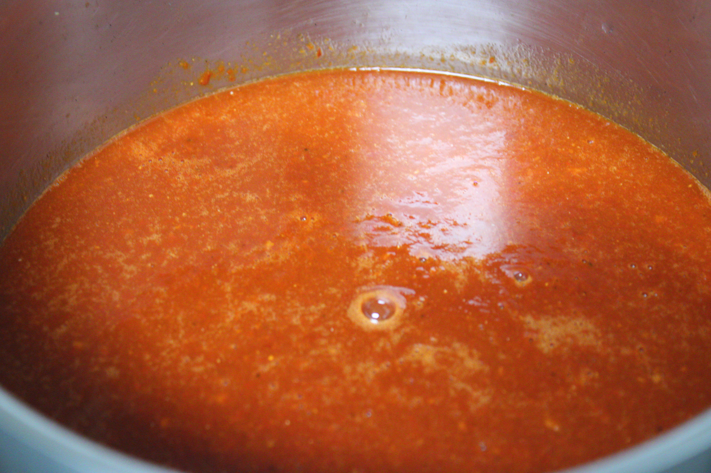
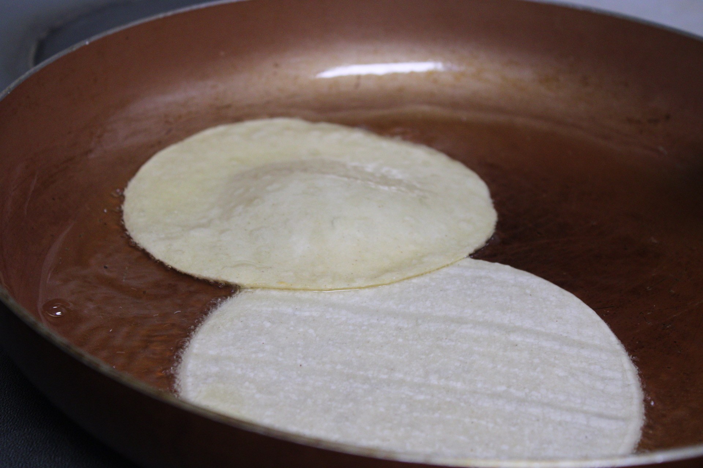
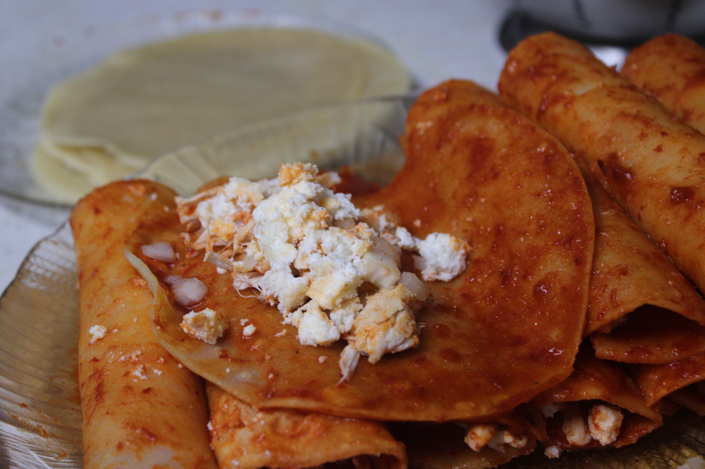
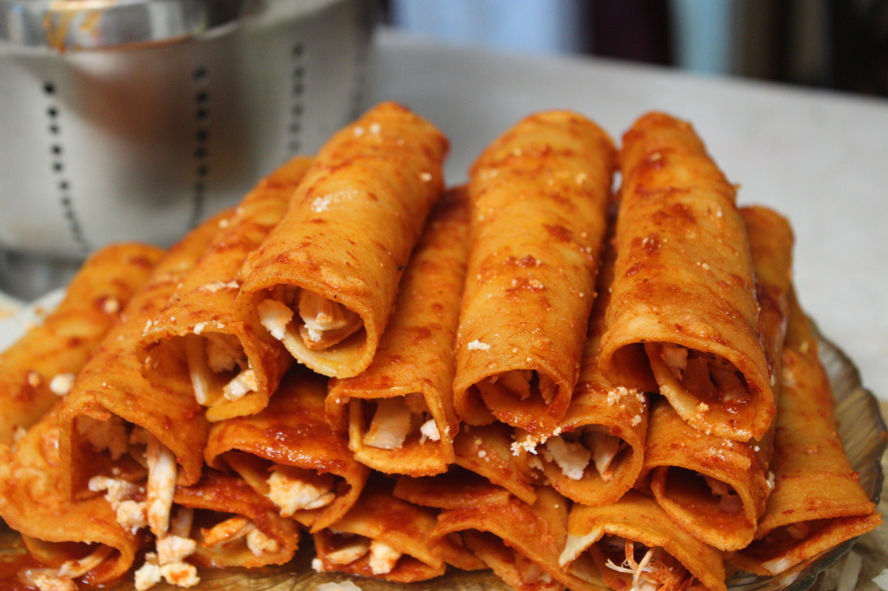

1. Heat up the sauce that you have made with the Chile Guajillo for about 15 minutes.

2.Then cook the tortillas until they are a little cripy and brown on both sides.

3. Then soak the tortillas in the Chile Guajillo sauce and add the shredded chicken and onion with cheese inside.

4. Then you roll up the enchiladas and put mozzarella cheese on top and put them in the oven for 20 minutes.

5. Then you add your toppings. Which is lettuce, sour cream, queso fresco, and avocado.